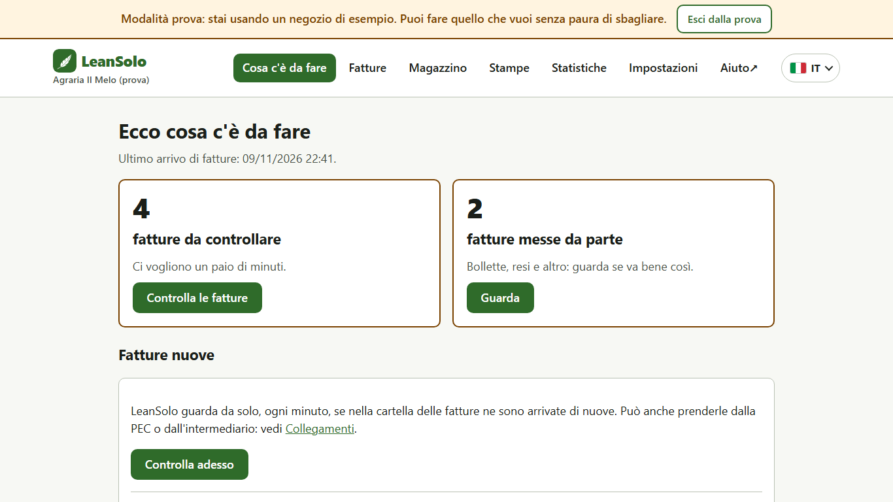
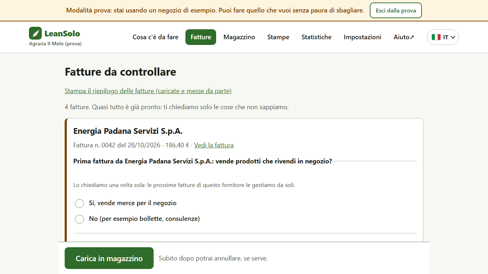
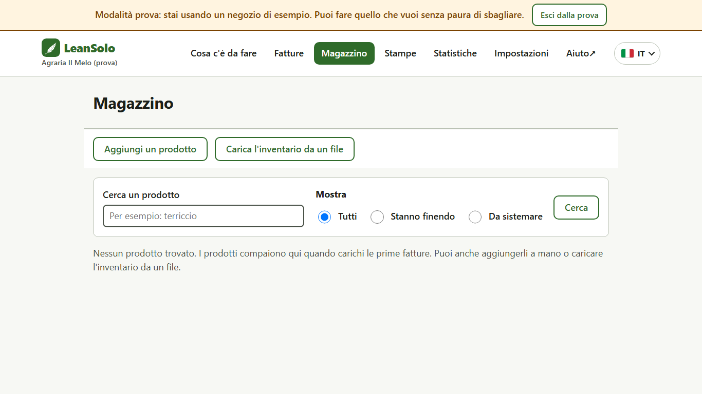
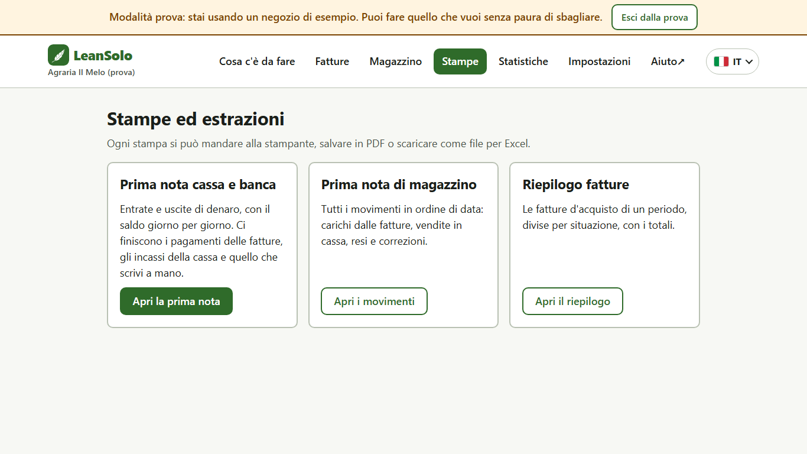
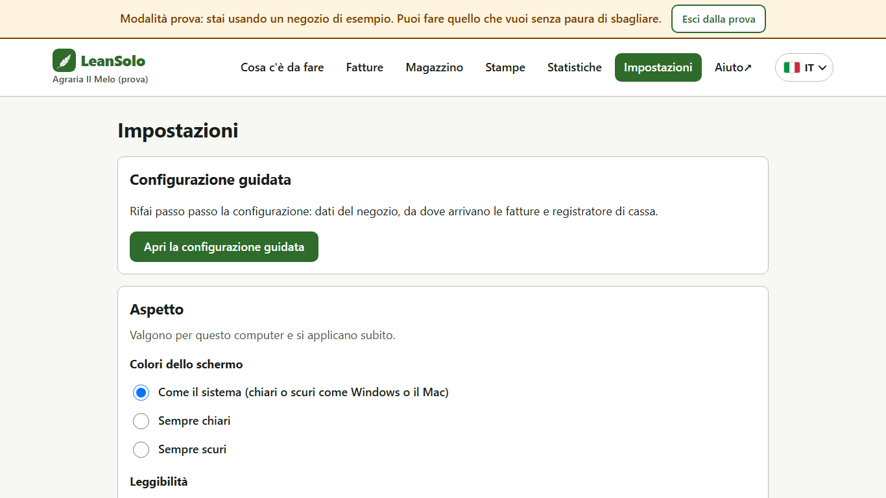

Guida all'uso di LeanSolo
Per chi sa usare il telefono e i social, ma il computer un po' meno. Novembre 2026.
Prima di cominciare
Questa guida è pensata per chi ogni giorno usa WhatsApp, Instagram o Facebook sul telefono senza pensarci, ma davanti al computer si sente meno sicuro. Non serve sapere niente di informatica: se sai mandare una foto su WhatsApp, sai usare LeanSolo.
Cosa fa LeanSolo, in una riga: legge da solo le fatture dei tuoi fornitori e aggiorna il magazzino del negozio. Tu rispondi solo a qualche domanda, come quando un'app ti chiede «Vuoi salvare questo contatto?».
1. Il computer spiegato a chi usa il telefono
Sul telefono si fa tutto con il dito. Sul computer il dito diventa il mouse (o il riquadro sotto la tastiera, sui portatili): muovi il mouse sul tavolo e sullo schermo si muove una freccia.
| Sul telefono | Sul computer |
|---|---|
| Tocchi una volta | Clic: premi una volta il tasto sinistro del mouse |
| Apri un'app toccando l'icona | Doppio clic sull'icona: due clic veloci di seguito |
| Tieni premuto per vedere altre opzioni | Clic destro: il tasto destro del mouse |
| Scorri con il dito | Giri la rotellina del mouse, oppure trascini la barra a destra |
| La tastiera che compare sullo schermo | La tastiera vera, sempre lì |
| Il tasto «Invia» | Il tasto Invio (la freccia grande ↵ a destra) |
| Tornare indietro | La freccia ← in alto a sinistra nel browser |
Le finestre
Sul computer ogni programma si apre in una finestra, come un'app che occupa lo schermo. In alto a destra di ogni finestra ci sono tre pulsanti: – la nasconde (resta aperta, la ritrovi nella barra in basso), □ la ingrandisce a tutto schermo, ✕ la chiude.
La barra in basso dello schermo (la «barra delle applicazioni») è come la riga delle app preferite in fondo al telefono: ci sono le icone dei programmi aperti e di quelli che usi spesso. Il pulsante con il logo di Windows, in basso a sinistra o al centro, è il menu Start: lì trovi tutti i programmi, come la schermata con tutte le app del telefono.
Il browser
LeanSolo si usa dentro il browser, il programma per navigare in Internet: di solito Edge (icona blu e verde) o Chrome (icona rossa, gialla e verde). È come quando apri un link da WhatsApp e si apre una pagina: solo che questa pagina è il tuo programma, e i dati restano sul computer del negozio.
2. Installare LeanSolo
Su Windows il modo più semplice è il Microsoft Store, il «negozio delle app» del computer: funziona come Play Store o App Store sul telefono.
- Clicca il pulsante Start (il logo di Windows nella barra in basso).
- Scrivi Store e clicca Microsoft Store.
- In alto, nella casella di ricerca, scrivi LeanSolo e premi Invio.
- Clicca LeanSolo Magazzino e poi Scarica (o Installa).
- Quando ha finito, clicca Apri. La prossima volta lo trovi nel menu Start: scrivi LeanSolo e premi Invio.
In alternativa vai su pazzoblu.github.io/leansolo, sezione Scarica: il pulsante per Windows porta allo Store, quello per Mac scarica il programma.
Quando LeanSolo si apre, compare una pagina nel browser: è lui. Puoi chiudere la scheda quando vuoi: LeanSolo resta acceso e continua a leggere le fatture. Per riaprirlo basta di nuovo l'icona LeanSolo.
3. Registrarsi e primo accesso
Per usare LeanSolo con il tuo negozio serve una registrazione gratuita, una sola volta. La prova dura 30 giorni dal primo accesso.
- Sul sito pazzoblu.github.io/leansolo clicca Registrati.
- Scrivi il nome del negozio, la partita IVA (11 cifre), il tuo nome e la tua email, spunta la casella dei termini e clicca Registrati.
- Apri LeanSolo: nel riquadro Comincia con il tuo negozio clicca Accedi.
- Entra con la stessa email: se è un indirizzo Gmail o Outlook clicca Accedi con Google o Accedi con Microsoft; altrimenti scrivi l'email e clicca Mandami il codice.
- Ti arriva un'email con un codice di poche cifre: scrivilo nella pagina di LeanSolo e clicca Entra.
Vuoi solo dare un'occhiata prima? Nella prima pagina clicca Prova con dati di esempio: si apre un negozio finto, l'Agraria Il Melo, dove puoi fare tutto senza paura. Per uscire: Esci dalla prova, in alto.
4. La configurazione guidata
Al primo accesso LeanSolo ti fa tre domande, una per pagina. Rispondi e clicca Avanti: è come configurare un telefono nuovo.
- Il tuo negozio: nome e partita IVA.
- Da dove arrivano le fatture? Dalla cartella del computer dove le salvi, dalla PEC o dall'intermediario (Aruba, Fatture in Cloud). Se non sai cosa scegliere, chiedi al tuo commercialista dove ricevi le fatture elettroniche.
- Il registratore di cassa: se vuoi collegarlo, per mandare i prezzi alla cassa e togliere dal magazzino quello che vendi. Puoi anche saltare e farlo dopo.
Puoi rifare la configurazione quando vuoi da Impostazioni → Apri la configurazione guidata.
5. Come è fatto LeanSolo
In alto c'è sempre il menu, come le icone in fondo a Instagram: clicca una voce per andare in quella parte del programma. La voce in cui ti trovi è colorata di verde.

- Cosa c'è da fare: la pagina di partenza, come le notifiche. Ti dice quante fatture aspettano e cosa manca.
- Fatture: le fatture arrivate da controllare.
- Magazzino: i prodotti e quanti ne hai.
- Stampe: prima nota, movimenti di magazzino, riepilogo delle fatture.
- Statistiche: per ora l'inventario del magazzino.
- Impostazioni: dati del negozio, persone, collegamenti, copie di sicurezza.
- Aiuto: le spiegazioni dentro il programma.
- La bandierina a destra cambia la lingua.
6. Il lavoro di ogni giorno: le fatture
Le fatture arrivano da sole: LeanSolo guarda ogni minuto se ce ne sono di nuove. Tu devi solo controllarle, di solito in un paio di minuti.
- Nella pagina Cosa c'è da fare clicca Controlla le fatture.
- Per ogni fattura LeanSolo ti fa solo le domande che non sa: per esempio se un fornitore nuovo vende merce per il negozio, oppure quanti pezzi ci sono in una confezione. Rispondi cliccando sul pallino della risposta giusta.
- Quando hai risposto a tutto, clicca il pulsante grande Carica in magazzino, in basso.
- Fatto: le quantità sono aggiornate. Se ti accorgi di aver sbagliato, subito dopo compare Annulla.

Le fatture che non riguardano il magazzino (bollette, consulenze, resi) LeanSolo le mette da parte e ti dice perché. Le trovi in Cosa c'è da fare → fatture messe da parte → Guarda.
7. Il magazzino

- Cercare un prodotto: clicca nella casella Cerca un prodotto, scrivi una parte del nome (per esempio «terriccio») e premi Invio.
- Vedere cosa sta finendo: scegli Stanno finendo e clicca Cerca.
- Correggere una quantità (prodotti rotti, una conta): clicca il nome del prodotto, scrivi quanti ne hai davvero e clicca Correggi.
- Aggiungere un prodotto a mano: Aggiungi un prodotto, scrivi nome, prezzo e quantità e clicca Aggiungi.
- Caricare tutto il magazzino la prima volta: Carica l'inventario da un file e segui le istruzioni (serve un foglio Excel).
8. Stampe ed Excel

Ogni stampa si può mandare alla stampante, salvare in PDF (un documento da mandare per email o WhatsApp) oppure scaricare come file per Excel. Apri la stampa che ti serve, scegli il periodo e clicca Stampa oppure Scarica per Excel. Per avere un PDF, clicca Stampa e come stampante scegli Salva come PDF.
Spunta Dall'ultima stampa in poi per stampare solo i movimenti nuovi, senza ripetere quelli già stampati.
9. Le copie di sicurezza
Ogni giorno LeanSolo salva da solo una copia di tutti i dati del negozio e delle fatture. Se sul computer c'è OneDrive (il «cloud» di Microsoft, come Google Foto o iCloud per le foto del telefono), la copia va anche su Internet: se il computer si rompe o viene rubato, i dati non si perdono.
- Vai in Impostazioni → Copie di sicurezza → Gestisci le copie.
- Controlla che accanto alla cartella ci sia scritto (sincronizzata nel cloud).
- Vuoi una copia subito, per esempio prima di cambiare computer? Clicca Fai adesso una copia.
10. Le persone del negozio
Ognuno entra con la propria email, come ognuno ha il proprio profilo sui social. Il titolare decide chi può fare cosa: per esempio il magazziniere vede il magazzino ma non la prima nota.
- Vai in Impostazioni → Gestisci gli utenti.
- Scrivi l'email della persona, scegli i suoi compiti e clicca Aggiungi.
- La persona apre LeanSolo su questo computer ed entra con la sua email.
Al primo accesso LeanSolo ti chiede di scegliere un PIN, come quello del telefono: serve per entrare anche quando manca Internet.
11. Rendere lo schermo più facile da leggere
In Impostazioni → Aspetto puoi scegliere Testo più grande, Alto contrasto e i colori chiari o scuri, come nelle impostazioni del telefono. Valgono subito.

Trucco valido in qualsiasi pagina: tieni premuto il tasto Ctrl (in basso a sinistra sulla tastiera) e premi + per ingrandire, – per rimpicciolire. È come allargare una foto con due dita.
12. Se qualcosa non va
| Cosa succede | Cosa fare |
|---|---|
| Ho chiuso la pagina di LeanSolo | Nessun problema: clicca di nuovo l'icona LeanSolo (menu Start → scrivi LeanSolo). |
| Non arrivano le fatture | In Cosa c'è da fare clicca Controlla adesso. Se ancora niente, controlla in Impostazioni → Collegamenti che la cartella o la PEC siano giuste. |
| Ho caricato una fattura per sbaglio | Subito dopo il carico clicca Annulla nell'avviso in alto. Se è passato del tempo, correggi le quantità dal Magazzino o scrivici. |
| Non mi arriva l'email con il codice | Guarda nella cartella Spam o Promozioni della posta. Dopo un minuto puoi chiedere un codice nuovo. |
| Non trovo un file scaricato | Esplora file (cartella gialla) → Download. |
| La scritta è troppo piccola | Impostazioni → Aspetto → Testo più grande, oppure Ctrl e +. |
Per qualsiasi dubbio scrivi a gltucceri@gmail.com: rispondiamo noi, persone vere.
Piccolo dizionario
| Parola | Cosa vuol dire |
|---|---|
| Browser | Il programma per aprire le pagine Internet (Edge, Chrome). LeanSolo si usa lì dentro. |
| Clic / doppio clic | Uno o due tocchi veloci con il tasto sinistro del mouse. |
| Cartella | Un contenitore di file, come un album di foto. |
| File | Un documento: una fattura, un foglio Excel, una foto. |
| Scaricare (download) | Salvare sul computer un file preso da Internet. |
| Cloud / OneDrive | Uno spazio su Internet dove i file si salvano da soli, come Google Foto per le foto. |
| CSV | Un tipo di file che si apre con Excel. |
| Un documento pronto da stampare o mandare, come una foto di un foglio. | |
| PEC | La posta elettronica certificata, da cui possono arrivare le fatture. |
| Prima nota | Il quaderno delle entrate e uscite di soldi del negozio. |